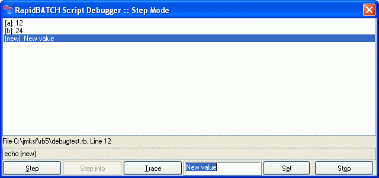

DEBUGVARS
DEBUGVARS
DEBUGVARS
DEBUGVARS
| Syntax: | DEBUGVARS var1,var2,var3 ... varn DEBUGVARS mode |
| Description: | Inserts the variables that are passed at DEBUGVARS into the debug-dialog window, to observe and modify them. All desired variables that sould be watched need to be separated by commas. Instead of specifying a variable-list, the values AUTO and NONE can be specified. AUTO does automatically insert all newly declared variables into the debug-dialog, NONE switches this option off again.  |
| Examples: | debugmode step rem watch [a] and [b] only debugvars [a], [b] [a] = '12' [b] = [a] * '2' [c] = [a] * [b] rem now, add all new variables automatically debugvars auto [new] = 'New value' echo [new] |
| Remarks: | This statement is only included in the script-interpreter provided with RapidBATCH Professional Edition. DEBUGVARS is ignored by the compiler and is not provided in compiled scripts. Set the environment-variable RB_DEBUGVARS to one of the possible parameters before the script is executed to set these variables by default. |